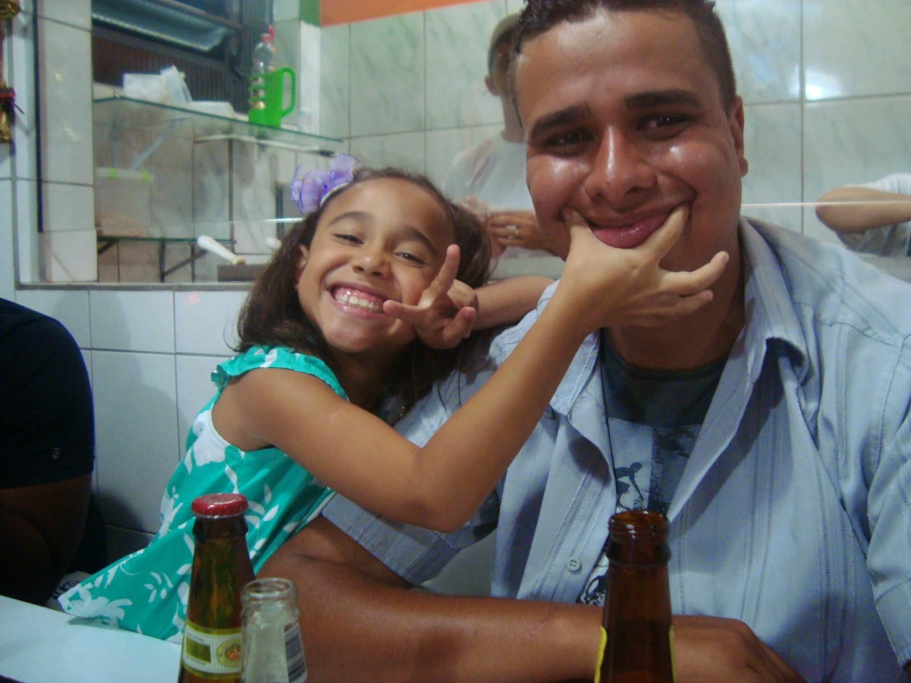
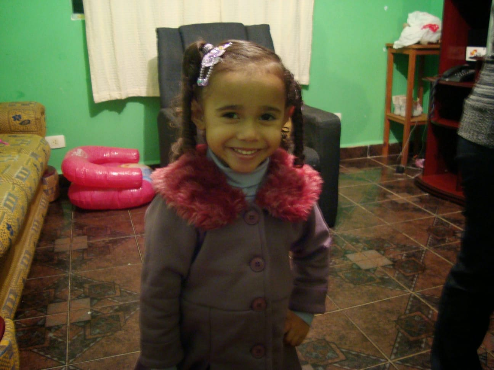
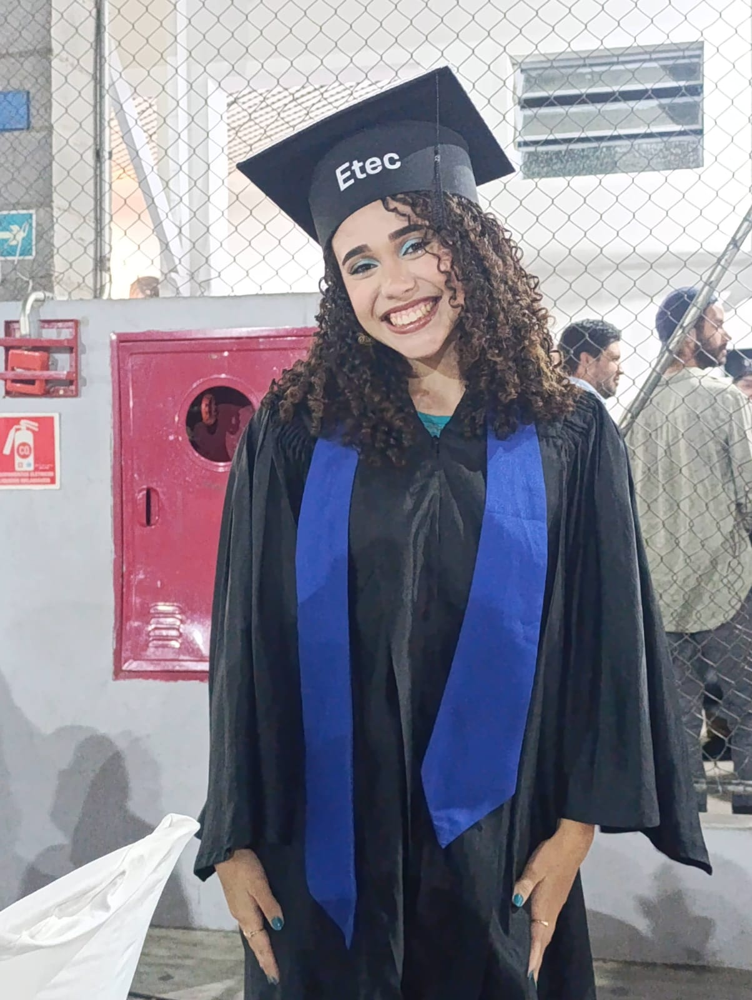

SOBRE MIM
O jogo me apresentou a um universo de aventuras, mas foram os momentos compartilhados que fizeram dele uma lembrança para a vida.
Olá, eu sou Mariana. Minha história com os jogos começou ainda na infância, a partir de uma lembrança que continua fazendo parte de quem sou.
Tenho 19 anos e sou estudante de Ciência da Computação na SPTech. Foi por meio do meu pai que conheci Resident Evil 4, e o que começou como momentos compartilhados entre nós despertou uma paixão pelo universo dos jogos, especialmente pelo gênero survival horror. Com o passar dos anos, esse interesse foi além de um hobby e também contribuiu para a escolha do caminho que sigo hoje.
Escolher Resident Evil 4 para este projeto é uma forma de resgatar essas memórias e conectar minha história pessoal à minha trajetória acadêmica. Aqui, compartilho um pouco do que essa experiência representa para mim e de como pequenas descobertas podem despertar interesses capazes de influenciar nossas escolhas e nosso futuro.


